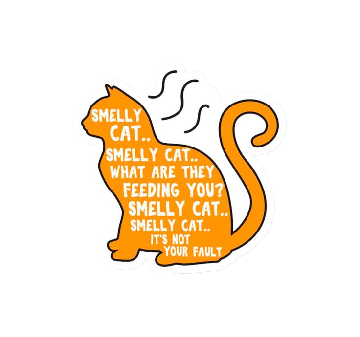
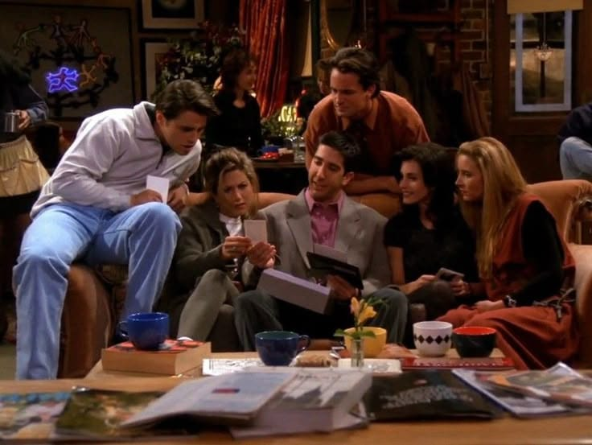
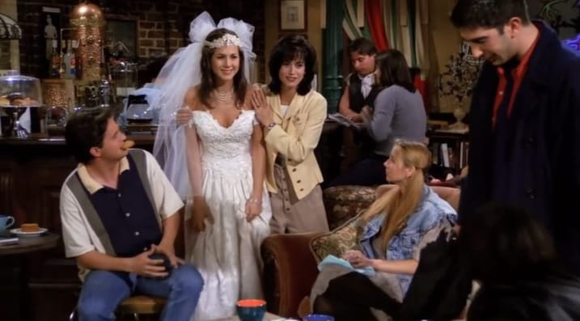
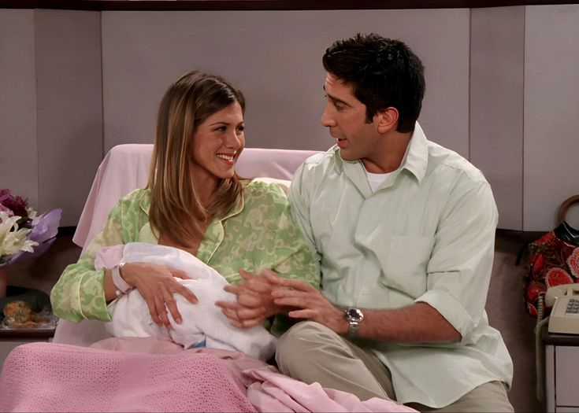
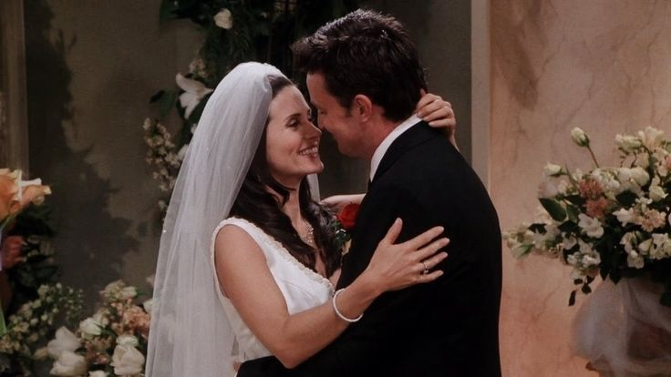
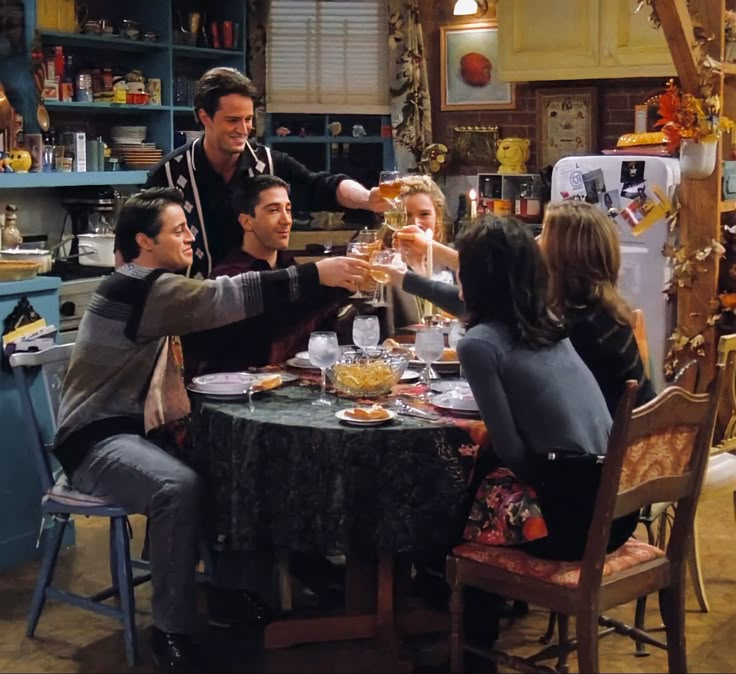
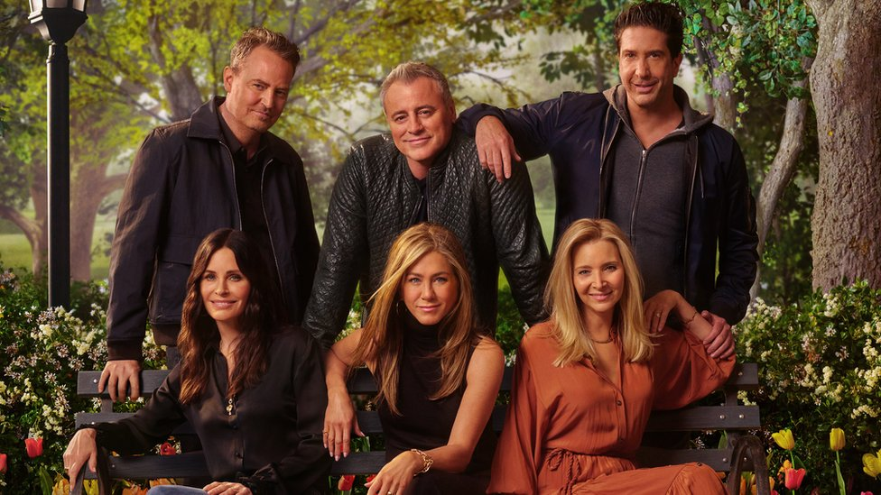
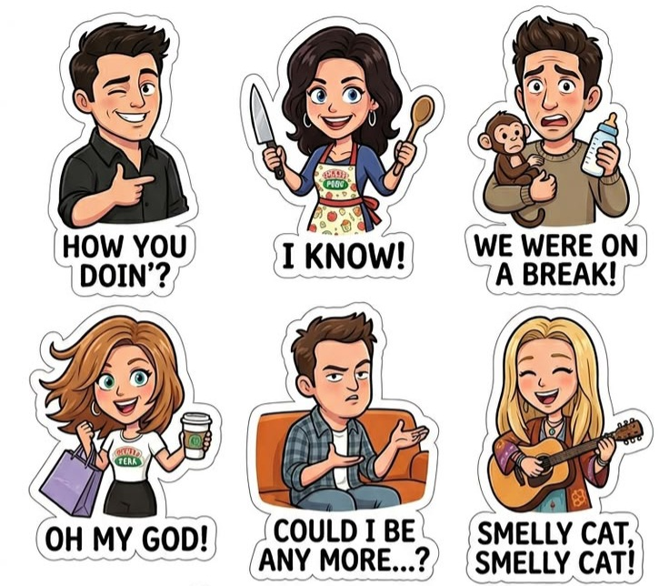

A série que marcou gerações


Friends é uma série produzida pela NBC entre 1994 e 2004, criada por David Crane e Marta Kauffman. É
considerada uma das sitcoms mais influentes da história da televisão.
A série acompanha o cotidiano de seis amigos Rachel, Monica, Phoebe, Joey, Chandler e Ross enquanto
enfrentam os desafios da vida adulta em Nova York. A narrativa aborda temas como carreira,
relacionamentos, amadurecimento e o valor da amizade.
Dois cenários marcantes são o Central Perk, a cafeteria onde o grupo passa grande parte do tempo, e
o apartamento da Monica, que transmite uma forte sensação de acolhimento e “casa”.
A série Friends acompanha a vida de seis amigos que vivem em Nova York e enfrentam juntos os
desafios da vida adulta. Mais do que uma simples comédia, a história mostra o crescimento pessoal,
emocional e profissional de cada personagem ao longo de dez anos, transformando o grupo em uma
espécie de “família escolhida”
Tudo começa quando Rachel Green decide abandonar uma vida confortável e fugir do próprio casamento,
buscando independência. Ela passa a morar com Monica Geller, sua amiga de infância, e se integra ao
grupo formado também por Ross Geller, Chandler Bing, Joey Tribbiani e Phoebe Buffay.
A partir daí, a convivência entre eles se torna constante, principalmente no café Central Perk, onde
compartilham momentos do dia a dia, conquistas, frustrações e sonhos.


A série também explora temas universais como amizade, amor, carreira, insegurança e o medo de não
corresponder às expectativas da vida adulta.
Um dos principais fios condutores é o relacionamento entre Rachel e Ross, que passa por diversas
fases, mostrando que o amor nem sempre segue um caminho simples ou linear. Entre términos,
reconciliações e desencontros, os dois demonstram como os sentimentos podem permanecer mesmo diante
das dificuldades.
Além disso, a relação entre os seis amigos reforça a importância do apoio emocional e da amizade
verdadeira, especialmente em momentos difíceis da vida.
Além do relacionamento entre Rachel e Ross, a série também desenvolve de forma muito marcante a
relação entre Monica e Chandler.
O casal surpreende por surgir de uma amizade construída ao longo
dos anos, mostrando que relacionamentos saudáveis também podem nascer da confiança, da parceria e da
convivência.
Diferente de um romance cheio de idas e vindas, Monica e Chandler representam estabilidade,
amadurecimento e apoio mútuo, enfrentando juntos desafios como casamento, carreira e a dificuldade
para terem filhos.


A amizade entre eles também é um dos pontos mais fortes da série. Entre as meninas,
Monica, Rachel e Phoebe possuem personalidades muito diferentes, mas conseguem construir uma
relação baseada em apoio, conselhos e companheirismo. Enquanto Monica
costuma ser mais
organizada e controladora, Rachel vive um grande processo de
amadurecimento e independência, e
Phoebe traz um jeito leve, espontâneo e muitas vezes excêntrico.
Já entre os meninos, Ross, Chandler e Joey apresentam uma amizade marcada pelo humor, pela
lealdade e pelas brincadeiras constantes. Chandler utiliza o sarcasmo
como forma de lidar com
inseguranças, Joey representa o amigo divertido e espontâneo,
enquanto Ross tende a ser mais
emocional e racional ao mesmo tempo.
Nos momentos finais, a história destaca que a vida está em constante mudança.
Os personagens começam a seguir caminhos diferentes, assumindo novas responsabilidades e encerrando
um ciclo importante de suas vidas.
Assim, Friends se destaca não apenas pelo humor, mas por retratar de forma sensível e realista a
transição para a vida adulta e a importância das conexões humanas ao longo dessa jornada.
Até hoje, os próprios atores demonstram esse laço de amizade construído ao longo dos anos,

Conheça os personagens
Descubra com qual personagem você mais se parece
